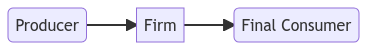
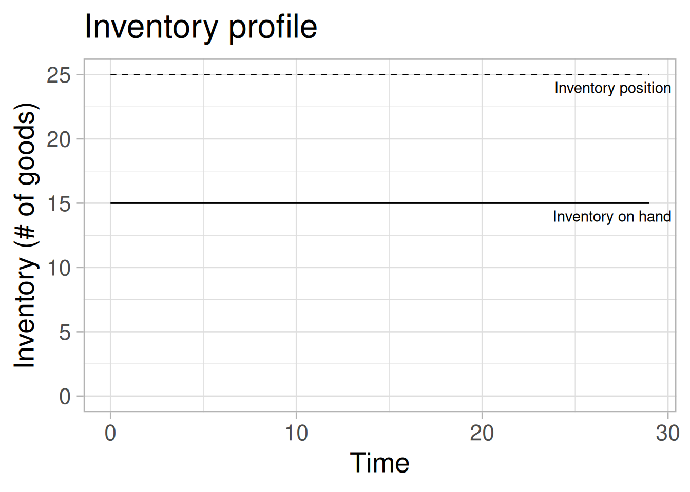
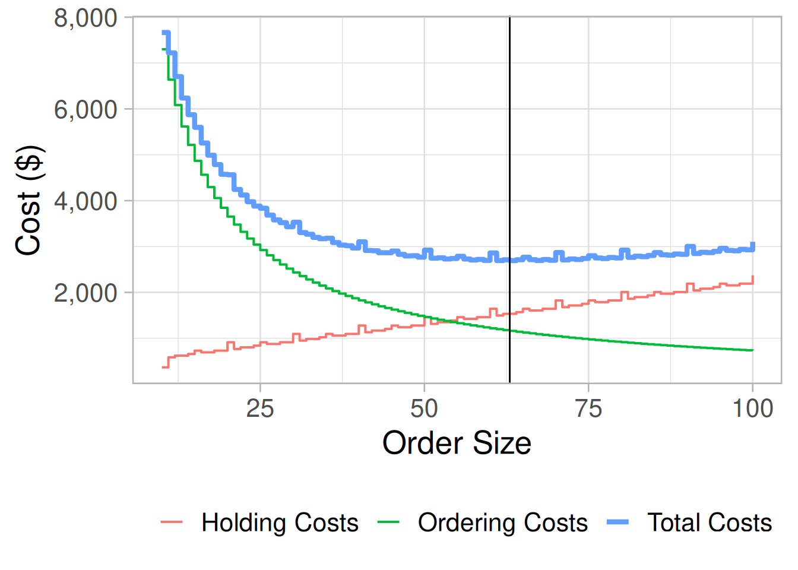
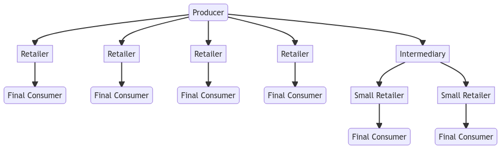
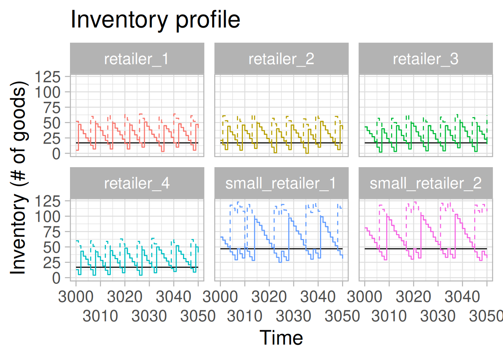
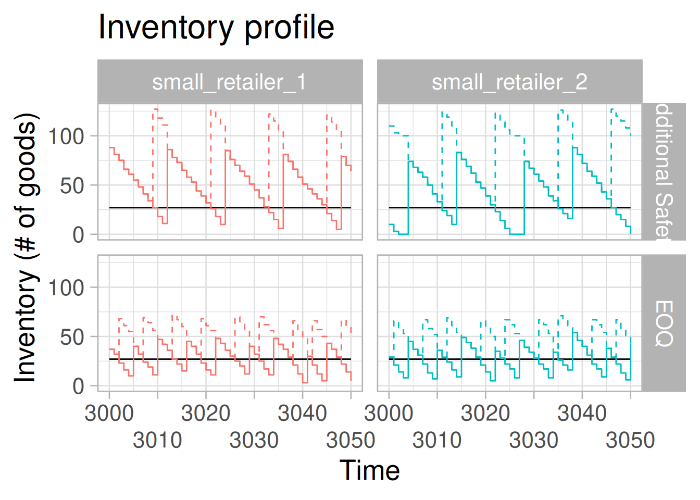

Supply Chain - Slice 0
What’s this?
Made a very simple python agent-based model of supply chains. The interesting part of the project is perishables and waste, but here I am starting with a very simple inventory management problem with one item.
I start this small because this kind of setting is well understood and I can make sure the simulation works as intended.
It is still very possible that most of our project will actually not involve supply chains per se, but I think by the next demo we will have something useful enough to tell whether it fits with the overall project or not.
Simulations
This model is built in pure python (not using MESA yet). Each “agent” is a firm. This firm manages a single type of good. The firm needs to buy, store and sell this item to other firms or a final consumer.
This is not an economic model: there are no prices, no production and no labour. This is purely a dynamic inventory system: the firm needs to fulfill its orders by minimizing its costs.
Firms pay these costs:
- Holding cost: each unsold item costs \(h\$\) a day to store and handle
- Setup cost: each time a firm buys any item from its supplier, it incurs a cost of \(s\$\) to organize the delivery
- Purchasing cost: each time has a price \(u\$\) it needs to pay
On the other hand, the firm makes \(p\$\) back for every item it sells to its clients.
The objective is to manage one’s inventory so that the costs (of holding and setup) are small but at the same time we manage to fulfill all the orders of our clients.
One Agent
The simplest possible case is

To keep things super-simple:
- the producer is just an infinite pool of items waiting to be ordered
- consumers always order 10 items every day
Now let’s say that the firm can order items in the evening from the producer and they arrive in the morning before the consumers show up, then we can simulate the firm’s inventory resupply decisions. Let’s just say the agent tries to keep its inventory at 25 items at all times.
from one_agent_scenario import *
result = base_policy_oneagent_run(order_policy=BasePolicy(25),
initial_inventory=25)
single_firm=pd.DataFrame(result.data)If we plot the inventory at the end of the day (before the resupply is delivered) we get a very boring dynamic:

At the end of each day, the agent is always left with 15 items, with 10 more ordered and ready to go.
Now, if the agent pays 2$ for each time it organizes an order and 0.01$ for each day it stores each item, over the course of 100 days he is paying 200$ in ordering costs and 15$ of holding costs. It’s not a very good strategy because he’s ordering too often.
A different strategy we could employ is have the agent make bigger orders but only every now and then. If, say, we are going to make an order every time our inventory on hand drops below 20 units, what would be the right order to make?
Well we can run the simulation very many times and figure that one:
data = []
for order_quantity in range(10,101):
result= base_policy_oneagent_run(
order_policy=FixedReorderPointPolicy(
reorder_point=20,
order_quantity=order_quantity
),
cost_manager=FixedCostsManager(
unit_holding_costs=0.01,
order_cost=2
),
initial_inventory=20,
time_steps= 365*10
)
data.append({
"order_quantity" : order_quantity,
"holding_costs" : sum(result.data["HOLDING_COST"]),
"ordering_costs" : sum(result.data["ORDERING_COST"])
})
data=pd.DataFrame(data)Rows: 91
Columns: 3
$ order_quantity <dbl> 10, 11, 12, 13, 14, 15, 16, 17, 18, 19, 20, 21, 22, 23,…
$ holding_costs <dbl> 365.00, 583.82, 620.38, 620.37, 656.88, 729.85, 693.38,…
$ ordering_costs <dbl> 7300, 6638, 6084, 5616, 5216, 4868, 4564, 4296, 4056, 3…
The larger the order quantities, the lower setup costs (you order less times) but the higher the holding costs (you need to keep a lot of stuff in your store). You minimize costs when ordering 63 units for each order.
There is actually a known formula they use in supply chains for this, the EOQ which says
\[ \text{Order Size} = \sqrt{ \frac{2 \times \text{Demand} \times \text{Ordering Costs}}{\text{Holding Costs}}} \] Which in this example, with these numbers, give you \(\approx 63.24\), which is nicely more or less the answer we got.
So now we know the very basics of the model work. Time to actually add multiple agents!
Many Agents
Let’s make an actual agent-based model, with multiple agents acting in the supply chain:

There are now:
- 4 retailers who buy straight from the producer and sell to consumers
- 1 intermediate buyer who buys from the producer but sells to some “small retailers”
- 2 small retailers who buy from the intermediate firm and sell to consumers
It is also a more complicated model in that:
- Daily demand is random (\(\sim U[5,10]\)) and independent for each firm
- There are delivery lags:
- It takes 1 day for producer to deliver to retailers
- It takes 1 day for producer to deliver to intermediate seller
- It takes 2 more days for intermediate to deliver to small retailers
Knowing that everybody has the same order/holding costs, we would like to figure out how to organize the inventory management so that we maximize profits while having no stockouts.
To do so we need to set 6 parameters
- Reorder point \(s\) (i.e. how low should inventory get before we make a new order) for:
- Each retailer
- Intermediary
- Each small retailer
- Order quantity \(Q\) (i.e. when we do make an order to our supplier, how many items should we order?), for:
- Each retailer
- Intermediary
- Each small retailer
We have at a minimum 6 parameters to set and this is a quite tricky optimization because the inventory decisions of the intermediary depend very much on the order quantity decisions of the small retailers (i.e. if downstream they make big orders, upstream you need to hold on to large inventories).
It turns out however that even a simple hill-climber can work here:
def fixed_reorder_run_ga(input: np.array) -> float:
"""this function gets an numpy array as input and pass it as input for a simulation"""
all_profits = []
for i in range(5):
results = fixed_reorder_run(
order_quantity_retailer=round(input[0]),
reorder_point_retailer=round(input[1]),
order_quantity_intermediate=(input[2]),
reorder_point_intermediate=(input[3]),
order_quantity_small_retailer=(input[4]),
reorder_point_small_retailer=round(input[5])
)
## for the intermediate agent, we really only care about the money it accumulated
profits = results[1].money + results[1].currentInventory
### sum of total cash - all the stockouts penalties!
for retailer in results[2]:
profits += profit_quick(retailer)
for small_retailer in results[3]:
profits += profit_quick(small_retailer)
all_profits.append(-profits)
return sum(all_profits)
## start the optimization!
from DiscreteHillClimbing import Hill_Climbing_descent
available_predictors_values = [
np.arange(-1, 101),
np.arange(-1, 501)] * 3
solution, value = Hill_Climbing_descent(function = fixed_reorder_run_ga,
available_predictors_values = available_predictors_values,
random_counts_by_predictors = 3,
greedy_step = 1,
max_function_evals = 500,
maximize = False,
start_solution = None,
seed = 0) If we run the optimizer, we get as a suggestions: \(s_{\text{Retailer}}=17, s_{\text{intermediate}}=13, s_{\text{Small Retailer}}=47\) and \(Q_{\text{Retailer}}=47, Q_{\text{intermediate}}=99, Q_{\text{Small Retailer}}=76\) which over 10 years results in profits of \(918,010\$\).
This is very close to the maximum profits of \(927,132\$\) which you’d get by plugging in the formula from above for each firm.
In general the rule makes sense, small retailers (who take a long time to receive their products) hold on to much larger inventories and make big orders which in turn forces the intermediary to keep large reserves as well. And we got this result by running an optimizer over this “agent-based model” rather than learning any math.
We can look at how the model runs (after 3,000 steps):

You can see, particularly how small retailers need to order large batches and maintain large inventories since it takes a long time to receiver their products.
The thing that usually make supply chain interesting from an agent-based perspective is sensitivity analysis: what if an agent decides to start ordering a bit more to be “safe” (increases \(Q\) or \(s\))? It turns out that it makes the system worse for everyone else.
Here I run the scenario where small retailers order 45 units at each order versus one where agents look for “additional safety” by ordering 100 at a time.
In a single agent problem, ordering more increases your holding costs but here it causes actually retailrs to be worse off and often being left empty.
This happens because of stockouts to the intermediary

Future steps
This was a long and rambling demo, reproducing the kind of results that anybody who dealt with supply chain learns in a couple of minutes.
It is however also the only way to build a model of which we can have any confidence: it must replicate obvious stuff before we make it do cool things.
Now the important thing is to start adding interesting stuff:
- Item perishability (hello foodwaste)
- LIFO and FIFO inventories (norms of what kind of “freshness” we expect when we buy stuff)
- Learning and over-reactions (bullwhip effects are an old idea; but what do they mean for food waste?)